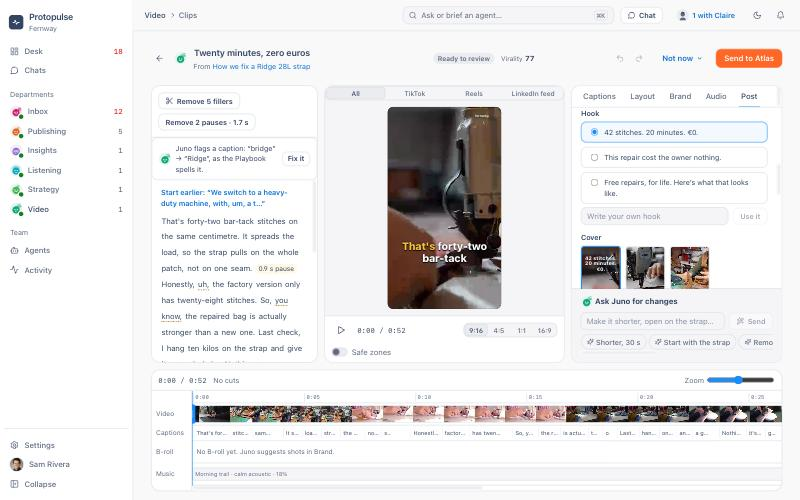
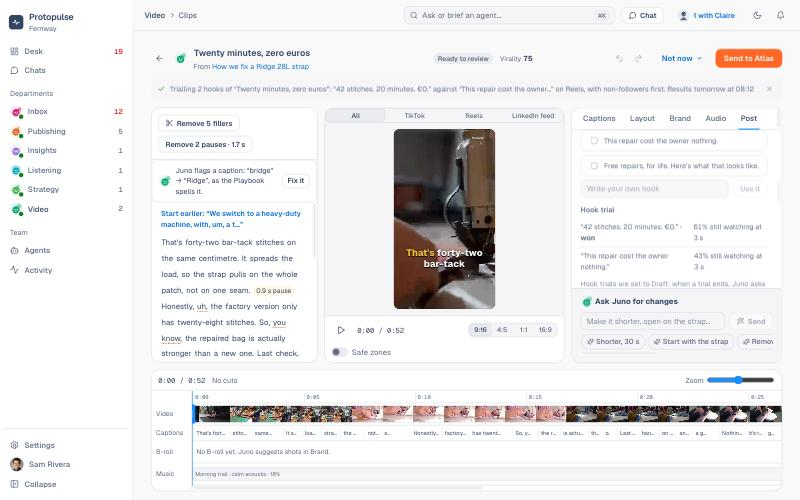
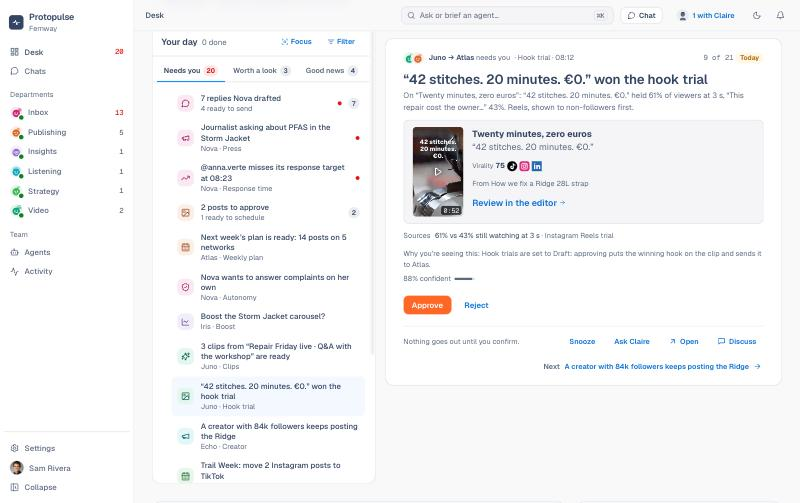
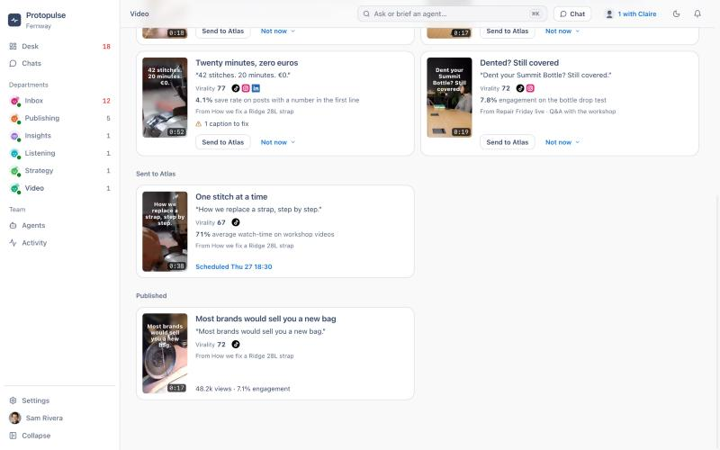
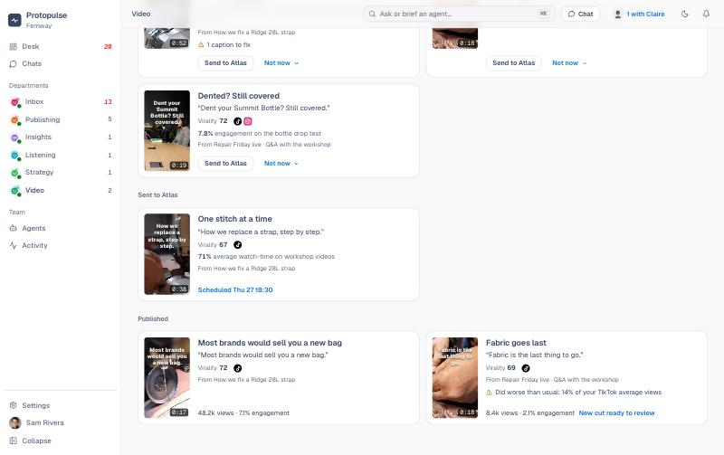

Juno, video: wave 2
Session of 26 November 2026. Wave 1 made Juno’s settings and guardrails real. Wave 2 asked for what changes the way Sam works, measured against the market. Two ideas were built: Juno tests a clip’s hooks before it goes out and learns from it, and she recuts a clip that did worse than usual. Backlog: design-plans/agent-depth/juno-wave2-backlog.md, decisions: juno-log.md.
The ideas, against the market
Ranked by how much they change what a tester sees Juno do. Each built idea answers the seven agentic-first questions in code; the PR body holds the grid.
| Idea | Market reference | Our card | Decision |
|---|---|---|---|
| Trial hooks before sending Two hooks of a clip on Instagram Reels, non-followers first; the winner goes on. | Instagram Trial Reels and YouTube Test & Compare test one post, by hand, and forget the result. | Juno picks the pair (a number against none), reads the result, applies it by her level, and after three wins proposes a Playbook rule her score then reads. | Go · built |
| Recut a clip that did worse than usual Product on screen from the first second. | Nobody: clipping tools stop at export. | Juno watches her clips after they’re out (Iris’s numbers), recuts with a product shot up front and the hook that names it, citing Echo’s competitor lesson. | Go · built |
| Customer videos become the Trail Week recap | Later, Dash Hudson, Emplifi ask for rights by public comment, then file the content. | Rights asked by Nova in DM, credited recap by Juno, slotted by Atlas. | Later |
| A clip answers the question | TikTok and Instagram video replies, by hand; Pinpoint DMs a product link. | Nova’s draft carries the moment of a video that already answers it. | Later |
| Juno describes the photos people send | Pinpoint describes a story’s picture for escalations. | The description feeds Nova’s escalation reason. | Drop |
Editor › Post: hook trial


Desk: the result, on Draft

Video › Published: recut


Checks
- Done
npm testandnpm run buildgreen on each PR and onmainafter each merge; CI of each PR green before merging; deploy passed. - Done
Both actions in their three levels, with Undo, covered by tests; ⇧D triggers “Hook trial results” and “A published clip did worse than usual”; Chat and ⌘K phrases tested.
- Done
1440 and 375, light and dark, on port 5186: Post tab, Clips groups (On trial, Published), Desk cards; no horizontal scroll at 375.
What stays open
- Trial figure from Iris
Juno estimates the 3-second hold per hook until Iris exposes it (
requests/iris-from-juno-hook-trial.md). - Seed post for “Fabric goes last”
Requested from Atlas (
requests/atlas-from-juno-fabric-post.md); until then the calendar and Insights don’t list it, Juno’s screens use the clip’s numbers. - Day 1 and trial history
Day 1 keeps Juno’s two past trials. Whether a new workspace should start with none is a question for the onboarding owner.
- Later
Customer videos into the Trail Week recap; a clip that answers the question in Nova’s drafts.